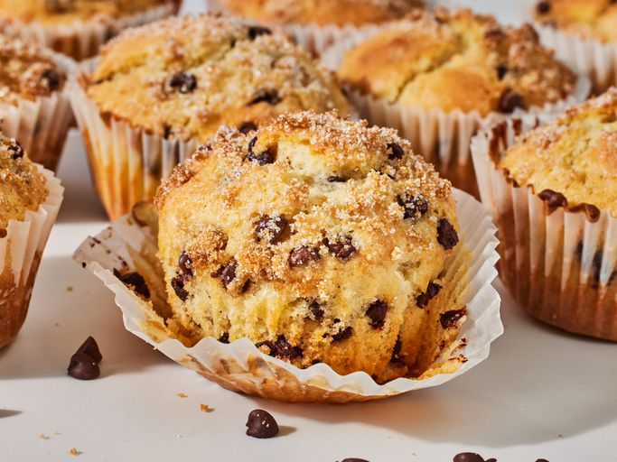

Chocolate Chip Muffins

Quick and easy to make and simply delicious!
The tops of these muffins have a crunchy sugar crust for a lovely contrast of texture in each bite.
Ingredients
- Milk: This moist chocolate chip muffin recipe starts with milk.
- Oil: Instead of butter, this recipe calls for a neutral oil (such as vegetable oil).
- Egg: An egg lends moisture and acts as a binder, which means it helps hold the batter together.
- Flour: All-purpose flour gives the batter structure.
- Sugars: You'll need white and brown sugars for this sweet recipe.
- Baking Powder: Baking powder acts as a leavener, which means it helps the batter rise.
- Salt: A pinch of salt enhances the overall flavor of the muffins, but it won't make them taste salty.
- Chocolate Chips: Of course, you'll need chocolate chips!
Recipe Steps
- Mix the wet ingredients in one bowl and the dry ingredients in another.
- Make a well in the dry mixture, then pour in the wet mixture and stir.
- Spoon the batter into the prepared muffin tin. Top with sugar.
- Bake the muffins until the top springs back when lightly pressed.
Return to top
Home